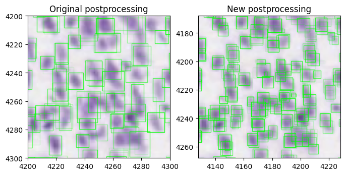
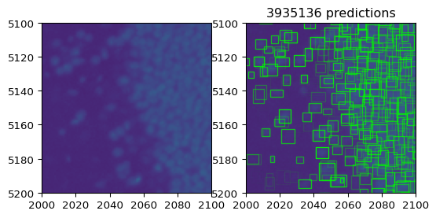
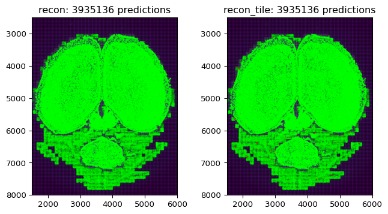
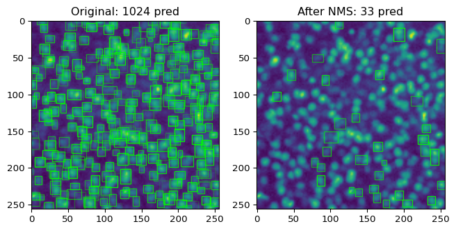

[9]:
import torch
import matplotlib.pyplot as plt
import os
import time
import numpy as np
import random
from matplotlib.patches import Rectangle
import tifffile
from torch.utils.data import DataLoader
import importlib as imp
import sys
sys.path.append('/home/abenneck/Desktop/yolo_tiles/docs/scripts')
import yolo_tiles
imp.reload(yolo_tiles)
from yolo_tiles import img_to_tiles, apply_model_to_tiles, load_test_image, preprocess, tileDataset, remove_bbox_in_overlap
import yolo_help
imp.reload(yolo_help)
from yolo_help import bbox_to_rectangles, imshow, convert_data, Net, get_best_bounding_box_per_cell
import yolo_post_help
imp.reload(yolo_post_help)
from yolo_post_help import remove_low_conf_bboxes, postprocess, bb_to_rec
Load a pretrained model and apply it to a test image¶
[10]:
# Load and extract tiles from a simulated image
# img, ncell = load_test_image(500,500)
# padded_img, tiles = img_to_tiles(img)
# Load and extract tiles from a real image
img = plt.imread('/home/abenneck/Desktop/yolo_model/images/section_000197_30800.jpeg')
padded_img, tiles = img_to_tiles(img, upper_threshold_bg = 210)
# Apply model to tiles + apply bbox edge filtering
outdir_model = os.path.join('/home/abenneck/Desktop/yolo_outputs/models/nepochs_9854')
modelname = 'modelsave.pt'
model_path = os.path.join(outdir_model,modelname)
out_original = apply_model_to_tiles(tiles, model_path, padded_img.shape[0], padded_img.shape[1], verbose=True)
Finished tiles 0:200/1496 in 1.19s
Finished tiles 200:500/1496 in 4.53s
Finished tiles 500:600/1496 in 1.85s
Finished tiles 600:700/1496 in 1.94s
Finished tiles 700:800/1496 in 1.80s
Finished tiles 800:900/1496 in 1.92s
Finished tiles 900:1000/1496 in 1.90s
Finished tiles 1000:1200/1496 in 3.33s
Finished tiles 1200:1300/1496 in 1.38s
Finished applying model to entire image in 20.41s with 920/1496 (0.615) tiles marked as foreground
Apply postprocessing + Plot model output¶
[7]:
# start0 = time.time()
# net = Net()
# B = net.B
# stride = net.stride
# pads = (np.array(padded_img.shape) - np.array(img.shape))/2
# out_ = postprocess(out, B, stride, pads)
# print(f'Finished postprocessing in {time.time()-start0:.2f}s')
[6]:
start = time.time()
net = Net()
B = net.B
stride = net.stride
fig, axs = plt.subplots(1,2)
# Display the model results after the OLD workflow
img = plt.imread('/home/abenneck/Desktop/yolo_model/images/section_000197_30800.jpeg')
padded_img, tiles = img_to_tiles(img, upper_threshold_bg = 210)
axs[0].imshow(padded_img)
bboxes, data = convert_data(out_original[None], B, stride)
scores = torch.Tensor(data[:,-1])
bboxes, scores = get_best_bounding_box_per_cell(bboxes, scores, B)
predicted_rectangles = bbox_to_rectangles(np.asarray(bboxes),fc='none',ec='lime',alpha=scores)
axs[0].add_collection(predicted_rectangles)
axs[0].set_title('Original postprocessing')
axs[0].set_xlim([4200,4300])
axs[0].set_ylim([4300,4200])
# Display the model results after the NEW workflow
img_path = '/home/abenneck/Desktop/yolo_model/images/section_000197_30800.jpeg'
out_fname = (img_path.split('/')[-1]).split('.')[0] + '.npy'
out_path = f'/nafs/shattuck/RodentToolsData/ZW-DT-1-P56-1/yolo_outputs_v03_32bit/{out_fname}'
out = np.load(out_path)
out = out.transpose((1,2,0))
# axs[1].imshow(padded_img)
pads = (np.array(padded_img.shape) - np.array(img.shape))/2
axs[1].imshow(img)
scores = out[:,:,4].ravel()
predicted_rectangles = bb_to_rec(out, fc='none', ec='lime', alpha=scores)
axs[1].add_collection(predicted_rectangles)
axs[1].set_title('New postprocessing')
axs[1].set_xlim([4200-pads[1], 4300-pads[1]])
axs[1].set_ylim([4300-pads[0], 4200-pads[0]])
fig.set_size_inches((8,4))
print(f'Finished entire image in {time.time()-start:.2f}s')
Finished entire image in 102.14s

[69]:
print(f'Old bb count {len(bboxes)} vs New bb count {len(scores)}')
Old bb count 1181616 vs New bb count 4618656
Real Data Processing¶
[11]:
model_path = '/nafs/shattuck/RodentToolsData/ZW-DT-1-P56-1/yolo_saved_weights/modelsave_bright_on_dark.pt'
# model_path = '/home/abenneck/Desktop/yolo_outputs/models/nepochs_9854/modelsave.pt'
net = Net()
net.load_state_dict(torch.load(model_path))
img_dir = '/nafs/shattuck/RodentToolsData/ZW-DT-1-P56-1/Ex_488_Em_525_stitched'
outdir = '/nafs/shattuck/RodentToolsData/ZW-DT-1-P56-1/yolo_outputs_v04/'
[4]:
8587 / 8, 7321 / 8
[4]:
(1073.375, 915.125)
[12]:
# Generate the .npz metadata file for the whole dataset
img_path = os.path.join(img_dir, os.listdir(img_dir)[0])
img = tifffile.imread(img_path)
fname_meta = os.path.join(outdir, os.path.split(img_dir)[-1] + '_metadata.npz')
if False:
np.savez(fname_meta,
nrow = img.shape[0],
ncol = img.shape[1],
nslice = len(os.listdir(img_dir)),
drow = 7.464,
dcol = 7.464,
dslice = 2.0)
# data = np.load(fname_meta)
# print([k for k in data])
[17]:
start_total = time.time()
next_idx = 1500
net = Net()
B = net.B
stride = net.stride
for idx, fname in enumerate(sorted(os.listdir(img_dir))):
if idx < next_idx:
continue
# Load input image
img_path = os.path.join(img_dir, fname)
img = tifffile.imread(img_path)
# img_path = '/home/abenneck/Desktop/yolo_model/images/section_000197_30800.jpeg'
# img = plt.imread(img_path)
# img = np.transpose(img, (2,0,1))
# img = img[0]
# Preprocess using gamma correction + upsampling
start = time.time()
img_up = preprocess(img)
print(f'Finished preprocessing in {time.time()-start:.2f}s')
# Extract tiles from the preprocessed input image
padded_img, tiles = img_to_tiles(img_up, lower_threshold_bg = 0.04, verbose=True)
# Apply model to tiles + apply bbox edge filtering
print('Applying model to tiles . . .')
out = apply_model_to_tiles(tiles, model_path, padded_img.shape[0], padded_img.shape[1], verbose=True)
# Convert the raw model output into a more useful data structure
print('Postprocessing . . .')
pads = (np.array(padded_img.shape) - np.array(img_up.shape))/2
out = torch.tensor(out.clone().detach(), dtype=torch.float32)
out = postprocess(out, B, stride, pads, up_factor=2, verbose=True)
# Save the processed output
out_fname = (img_path.split('/')[-1]).split('.')[0] + '.npy'
out_path = os.path.join(outdir, out_fname)
if False:
np.save(out_path, out)
# (11/19/25) Save some additional metadata in an npz file
out_fnamez = (img_path.split('/')[-1]).split('.')[0] + '_metadata.npz'
out_pathz = os.path.join(outdir, out_fnamez)
if False:
np.savez(out_pathz,
units = 'um',
nrow_orig_img = img.shape[0],
ncol_orig_img = img.shape[1],
drow_orig_img = 1.866,
dcol_orig_img = 1.866,
dslice_orig_img = 2.0,
nrow_upsampled_img = img_up.shape[0],
ncol_upsampled_img = img_up.shape[1],
drow_upsampled_img = 3.732,
dcol_upsampled_img = 3.732,
pad_row_top = pads[0],
pad_row_bot = pads[0],
pad_col_left = pads[1],
pad_col_right = pads[1],
nrow = out.shape[0],
ncol = out.shape[1],
drow = 7.464,
dcol = 7.464,
note = "Bbox coords refer to the original image, with (0,0) corresponding to the top left pixel center"
)
print(f'Saved the outputs for image {idx}/{len(os.listdir(img_dir))} in {time.time()-start_total:.2f}s\n')
start_total = time.time()
Finished preprocessing in 2.61s
Finished extracting all tiles in 6.62s
Applying model to tiles . . .
Finished tiles 0:300/5082 in 0.89s
Finished tiles 300:500/5082 in 1.56s
Finished tiles 500:700/5082 in 2.12s
Finished tiles 700:900/5082 in 2.20s
Finished tiles 900:1000/5082 in 1.10s
Finished tiles 1000:1100/5082 in 1.45s
Finished tiles 1100:1200/5082 in 1.19s
Finished tiles 1200:1300/5082 in 1.48s
Finished tiles 1300:1400/5082 in 1.27s
Finished tiles 1400:1500/5082 in 1.49s
Finished tiles 1500:1600/5082 in 1.27s
Finished tiles 1600:1700/5082 in 1.46s
Finished tiles 1700:1800/5082 in 1.17s
Finished tiles 1800:1900/5082 in 1.44s
Finished tiles 1900:2000/5082 in 1.19s
Finished tiles 2000:2100/5082 in 1.46s
Finished tiles 2100:2200/5082 in 1.22s
Finished tiles 2200:2300/5082 in 1.47s
Finished tiles 2300:2400/5082 in 1.22s
Finished tiles 2400:2600/5082 in 2.57s
Finished tiles 2600:2800/5082 in 2.50s
Finished tiles 2800:3000/5082 in 2.44s
Finished tiles 3000:3200/5082 in 2.28s
Finished tiles 3200:3400/5082 in 2.14s
Finished tiles 3400:3600/5082 in 1.98s
Finished tiles 3600:3800/5082 in 1.72s
Finished tiles 3800:4000/5082 in 1.49s
Finished tiles 4000:4200/5082 in 1.19s
Finished applying model to entire image in 46.19s with 2708/5082 (0.533) tiles marked as foreground
Postprocessing . . .
/tmp/ipykernel_3755832/1739534236.py:37: UserWarning: To copy construct from a tensor, it is recommended to use sourceTensor.clone().detach() or sourceTensor.clone().detach().requires_grad_(True), rather than torch.tensor(sourceTensor).
out = torch.tensor(out.clone().detach(), dtype=torch.float32)
Finished postprocessing in 0.24s
Saved the outputs for image 1500/3600 in 59.18s
---------------------------------------------------------------------------
KeyboardInterrupt Traceback (most recent call last)
/tmp/ipykernel_3755832/1739534236.py in ?()
11 continue
12
13 # Load input image
14 img_path = os.path.join(img_dir, fname)
---> 15 img = tifffile.imread(img_path)
16
17 # img_path = '/home/abenneck/Desktop/yolo_model/images/section_000197_30800.jpeg'
18 # img = plt.imread(img_path)
~/.local/lib/python3.10/site-packages/tifffile/tifffile.py in ?(files, selection, aszarr, key, series, level, squeeze, maxworkers, buffersize, mode, name, offset, size, pattern, axesorder, categories, imread, sort, container, chunkshape, dtype, axestiled, ioworkers, chunkmode, fillvalue, zattrs, multiscales, omexml, out, out_inplace, _multifile, _useframes, **kwargs)
1102 )
1103 if selection is None:
1104 return store
1105 return zarr_selection(store, selection, out=out)
-> 1106 return tif.asarray(
1107 key=key,
1108 series=series,
1109 level=level,
~/.local/lib/python3.10/site-packages/tifffile/tifffile.py in ?(self, key, series, level, squeeze, out, maxworkers, buffersize)
4340 elif len(pages) == 1:
4341 page0 = pages[0]
4342 if page0 is None:
4343 raise ValueError('page is None')
-> 4344 result = page0.asarray(
4345 out=out, maxworkers=maxworkers, buffersize=buffersize
4346 )
4347 else:
~/.local/lib/python3.10/site-packages/tifffile/tifffile.py in ?(self, out, squeeze, lock, maxworkers, buffersize)
9089 ]
9090 # except IndexError:
9091 # pass # corrupted file, for example, with too many strips
9092
-> 9093 for _ in self.segments(
9094 func=func,
9095 lock=lock,
9096 maxworkers=maxworkers,
~/.local/lib/python3.10/site-packages/tifffile/tifffile.py in ?(self, lock, maxworkers, func, sort, buffersize, _fullsize)
8891 # reduce memory overhead by processing chunks of up to
8892 # buffersize of segments because ThreadPoolExecutor.map is not
8893 # collecting iterables lazily
8894 with ThreadPoolExecutor(maxworkers) as executor:
-> 8895 for segments in fh.read_segments(
8896 self.dataoffsets,
8897 self.databytecounts,
8898 lock=lock,
~/.local/lib/python3.10/site-packages/tifffile/tifffile.py in ?(self, offsets, bytecounts, indices, sort, lock, buffersize, flat)
14723 data = None
14724 else:
14725 with lock:
14726 seek(offset)
> 14727 data = read(bytecount)
14728 start = 0
14729 stop = 0
14730 result = []
KeyboardInterrupt:
[2]:
# # Load a target image
# start_total = time.time()
# img_dir = '/nafs/shattuck/RodentToolsData/ZW-DT-1-P56-1/Ex_488_Em_525_stitched'
# model_path = '/home/abenneck/Desktop/yolo_outputs/models/nepochs_9854/modelsave.pt'
# # model_path = '/nafs/shattuck/RodentToolsData/ZW-DT-1-P56-1/yolo_saved_weights/modelsave_bright_on_dark.pt'
# idx = 500
# net = Net()
# net.load_state_dict(torch.load(model_path))
# net.eval()
# B = net.B
# stride = net.stride
# # Load input image
# fname = sorted(os.listdir(img_dir))[idx]
# img_path = os.path.join(img_dir, fname)
# img = tifffile.imread(img_path)
# # Preprocess using gamma correction + upsampling
# start = time.time()
# img_up = preprocess(img)
# print(f'Finished preprocessing in {time.time()-start:.2f}s')
# # Extract tiles from the preprocessed input image
# padded_img, tiles = img_to_tiles(img_up, lower_threshold_bg = 0.04, verbose=True)
# # # Apply model to tiles + apply bbox edge filtering
# # print('Applying model to tiles . . .')
# # out = apply_model_to_tiles(tiles, model_path, padded_img.shape[0], padded_img.shape[1], verbose=True)
# # # Convert the raw model output into a more useful data structure
# # print('Postprocessing . . .')
# # pads = (np.array(padded_img.shape) - np.array(img_up.shape))/2
# # out = torch.tensor(out.clone().detach(), dtype=torch.float32)
# # out = postprocess(out, B, stride, pads, up_factor=2, verbose=True)
# # # Save the processed output
# # out_fname = (img_path.split('/')[-1]).split('.')[0] + '.npy'
# # # out_path = f'/nafs/shattuck/RodentToolsData/ZW-DT-1-P56-1/yolo_outputs_v03_32bit/{out_fname}'
# # out_path = f'/home/abenneck/Desktop/yolo_model/{out_fname}_instance'
# # # np.save(out_path, out)
# # print(f'Saved the outputs for image {idx}/{len(os.listdir(img_dir))} in {time.time()-start_total:.2f}s\n')
# # start_total = time.time()
Finished preprocessing in 2.53s
Finished extracting all tiles in 6.94s
[18]:
# img_up = preprocess(img)
# pads = (np.array(padded_img.shape) - np.array(img_up.shape))/2
# pads
[18]:
array([53., 87.])
[ ]:
# nrow_t = tiles[0]['c_idx']+1
# ncol_t = tiles[0]['r_idx']+1
# # for idx, tile in enumerate(tiles):
# # p = tile['p']
# # if (p[0]-pads[0])/2 < 4000 and (p[0]-pads[0])/2 > 3900 and (p[1]-pads[1])/2 < 5100 and (p[1]-pads[1])/2 > 5000:
# # print(idx)
# # # break
# idx_start = 2727
# fig, ax = plt.subplots(8,1)
# for idx in range(8):
# p = tiles[idx_start+idx]['p']
# ax[idx].imshow(tiles[idx_start + idx]['img'])
# ax[idx].set_title(f'p: {(p[0]-pads[0])/2}, {(p[1]-pads[1])/2}')
# fig.set_size_inches(4,32)
[10]:
start = time.time()
# TODO: Adjust tiles to original input dimensions for visualization purposes?
addTiles = False
plotBbox = True
setBounds = True
img_idx = 1500
img_dir = '/nafs/shattuck/RodentToolsData/ZW-DT-1-P56-1/Ex_488_Em_525_stitched'
fname = sorted(os.listdir(img_dir))[img_idx]
img_path = os.path.join(img_dir, fname)
img = tifffile.imread(img_path)
img_up = preprocess(img)
if plotBbox:
padded_img, tiles = img_to_tiles(img, lower_threshold_bg = 0.04, verbose=True)
else:
padded_img, tiles = img_to_tiles(img_up, lower_threshold_bg = 0.04, verbose=True)
tile_dim = tiles[0]['img'].shape[0]
fig, axs = plt.subplots(1,2)
# if plotBbox:
# for ax in axs:
# ax.imshow(preprocess(img, upsample=False))
# else:
# for ax in axs:
# ax.imshow(padded_img)
for ax in axs:
ax.imshow(preprocess(img, upsample=False))
out_fname = fname.split('.')[0] + '.npy'
out_path = f'/nafs/shattuck/RodentToolsData/ZW-DT-1-P56-1/yolo_outputs_v03_32bit/{out_fname}'
# out_path = f'/home/abenneck/Desktop/yolo_model/{out_fname}'
# ec = 'm' if 'home' in out_path else 'lime'
ec = 'lime'
out = torch.Tensor(np.load(out_path))
if addTiles:
print('Adding tiles . . .')
start = time.time()
for tile in tiles:
p = tile['p']
bg = tile['bg']
color = 'k' if bg else 'w'
for ax in axs:
rec = Rectangle(p[::-1],tile_dim,tile_dim, facecolor=color, edgecolor='k',alpha = 0.2)
ax.add_patch(rec)
print(f'Finished plotting tiles in {time.time()-start:.2f}s, {len(scores)} boxes present')
if plotBbox:
print('Plotting bboxes . . .')
# Filter out extra bboxes
start = time.time()
scores = out[:,:,-4].ravel()
predicted_rectangles = bb_to_rec(out,fc='none',ec=ec,alpha=scores)
axs[1].add_collection(predicted_rectangles)
axs[1].set_title(f'{len(scores)} predictions')
print(f'Finished plotting bboxes in {time.time()-start:.2f}s, {len(scores)} boxes present')
if setBounds:
for ax in axs:
ax.set_xlim([2000,2100])
ax.set_ylim([5200,5100])
print(f'Finished entire image in {time.time()-start:.2f}s')
fig.canvas.draw()
# plt.savefig(f'/home/abenneck/Desktop/yolo_model/tiles_{img_idx}.png')
Finished extracting all tiles in 1.71s
Plotting bboxes . . .
Finished plotting bboxes in 64.54s, 3935136 boxes present
Finished entire image in 64.55s

Batch Mode¶
Load + preprocess image, Initialize DataLoader¶
[2]:
img_idx = 500
img_dir = '/nafs/shattuck/RodentToolsData/ZW-DT-1-P56-1/Ex_488_Em_525_stitched'
fname = sorted(os.listdir(img_dir))[img_idx]
img_path = os.path.join(img_dir, fname)
img = tifffile.imread(img_path)
img_up = preprocess(img) # Normalize, gamma correction, upsample by factor of 2
padded_img, tiles = img_to_tiles(img_up, lower_threshold_bg = 0.04)
pads = (np.array(padded_img.shape) - np.array(img_up.shape))/2
nrow_t = int(np.max([tile['r_idx'] for tile in tiles])) + 1
ncol_t = int(np.max([tile['c_idx'] for tile in tiles])) + 1
ds = tileDataset(tiles)
dl = DataLoader(ds, batch_size = ncol_t, shuffle=False)
print(f'{nrow_t} x {ncol_t} tiles')
77 x 66 tiles
Compare outputs in ‘batch mode’ and in ‘tile mode’¶
[3]:
model_path = os.path.join('/home/abenneck/Desktop/yolo_outputs/models/nepochs_9854')
model_path = os.path.join(model_path,'modelsave.pt')
dtype = torch.float32
net = Net()
net.load_state_dict(torch.load(model_path))
net.eval()
B = net.B
stride = net.stride
ds_factor = 8
tile_dim = 256
bbox_dim = 5
num_classes = 3
img_dim0 = padded_img.shape[0]
img_dim1 = padded_img.shape[1]
boundary_cond = (16,16)
ndim = 2
# # Apply model to 'nrow_t' several of tiles
# start_batch = time.time()
# recon_batch = np.zeros((bbox_dim*B+num_classes, int(img_dim0/ds_factor), int(img_dim1/ds_factor)))
# print('Starting batch mode . . .')
# for i_batch, batch in enumerate(dl):
# imgs, meta_data = batch
# if np.all(np.array(meta_data['bg'])):
# print(f'Skipping batch {i_batch}/{nrow_t}')
# continue
# else:
# start = time.time()
# out = net(imgs)
# for idx, elem in enumerate(out):
# out_i = remove_bbox_in_overlap(elem[None].clone().detach(), B, stride, tile_dim, boundary_cond = boundary_cond)
# p0 = meta_data['p'][0][idx]
# p1 = meta_data['p'][1][idx]
# recon_batch[:,int(p0/ds_factor):int((p0+tile_dim)/ds_factor), int(p1/ds_factor):int((p1+tile_dim)/ds_factor)] = out_i[0].detach().numpy()
# print(f'Finished batch {i_batch}/{nrow_t} in {time.time()-start:.2f}s')
# start = time.time()
# recon_batch = torch.tensor(recon_batch, dtype=torch.float32)
# recon_batch = postprocess(recon_batch, B, stride, pads, up_factor=2, verbose=True)
# print(f'Finished ALL batches in {time.time()-start_batch:.2f}s\n')
start_tile = time.time()
# Apply model to tiles + apply bbox edge filtering
print('Applying model to tiles . . .')
out = apply_model_to_tiles(tiles, model_path, padded_img.shape[0], padded_img.shape[1], verbose=True)
# Convert the raw model output into a more useful data structure
print('Postprocessing . . .')
pads = (np.array(padded_img.shape) - np.array(img_up.shape))/2
out = torch.tensor(out.clone().detach(), dtype=torch.float32)
recon_tile = postprocess(out, B, stride, pads, up_factor=2, verbose=True)
print(f'Finished ALL tiles in {time.time()-start_tile:.2f}s\n')
# Save the processed output
# out_fname = (img_path.split('/')[-1]).split('.')[0] + '.npy'
# out_path = f'/nafs/shattuck/RodentToolsData/ZW-DT-1-P56-1/yolo_outputs_v03_32bit/{out_fname}'
# out_path = f'/home/abenneck/Desktop/yolo_model/{out_fname}'
# np.save(out_path, out)
# print(f'Saved the outputs for image {idx}/{len(os.listdir(img_dir))} in {time.time()-start_total:.2f}s\n')
start_total = time.time()
Applying model to tiles . . .
Finished tiles 0:1100/5082 in 3.34s
Finished tiles 1100:1300/5082 in 1.67s
Finished tiles 1300:1500/5082 in 1.71s
Finished tiles 1500:1600/5082 in 0.59s
Finished tiles 1600:1800/5082 in 1.94s
Finished tiles 1800:2000/5082 in 2.05s
Finished tiles 2000:2200/5082 in 2.10s
Finished tiles 2200:2400/5082 in 2.03s
Finished tiles 2400:2600/5082 in 1.92s
Finished tiles 2600:2800/5082 in 1.80s
Finished tiles 2800:3000/5082 in 1.61s
Finished tiles 3000:3200/5082 in 1.30s
Finished applying model to entire image in 22.45s with 1264/5082 (0.249) tiles marked as foreground
Postprocessing . . .
/tmp/ipykernel_1316541/4095638668.py:53: UserWarning: To copy construct from a tensor, it is recommended to use sourceTensor.clone().detach() or sourceTensor.clone().detach().requires_grad_(True), rather than torch.tensor(sourceTensor).
out = torch.tensor(out.clone().detach(), dtype=torch.float32)
Finished postprocessing in 0.24s
Finished ALL tiles in 22.76s
[4]:
def tiles_to_orig(tiles, pads):
tiles_out = []
for tile in tiles:
I = tile['img']
p = tile['p']
bg = tile['bg']
r_idx = tile['r_idx']
c_idx = tile['c_idx']
# Shift the anchor point by the padded amount on each ax
p -= pads
# Reduce anchor point by upsampling factor
p = np.asarray(p)/2
new_tile = {'img':None, 'p':list(p), 'bg':bg, 'r_idx':r_idx, 'c_idx':c_idx}
tiles_out.append(new_tile)
return tiles_out
[5]:
start_total = time.time()
plotBbox = True
addTiles = True
setBounds = True
img_idx = 500
img_dir = '/nafs/shattuck/RodentToolsData/ZW-DT-1-P56-1/Ex_488_Em_525_stitched'
fname = sorted(os.listdir(img_dir))[img_idx]
img_path = os.path.join(img_dir, fname)
img_plot = preprocess(img, upsample=False)
tiles_plot = tiles_to_orig(tiles, pads)
fig, ax = plt.subplots(1,2)
for ax_i in ax:
ax_i.imshow(img_plot)
if addTiles:
print('Adding tiles . . .')
start = time.time()
for tile in tiles_plot:
p = tile['p']
bg = tile['bg']
color = 'k' if bg else 'w'
rec = Rectangle(p[::-1],tile_dim/2,tile_dim/2, facecolor=color, edgecolor='k', linewidth=3, alpha = 0.1)
ax[0].add_patch(rec)
rec = Rectangle(p[::-1],tile_dim/2,tile_dim/2, facecolor=color, edgecolor='k', linewidth=3, alpha = 0.1)
ax[1].add_patch(rec)
print(f'Finished plotting tiles in {time.time()-start:.2f}s')
if plotBbox:
print('Plotting bboxes . . .')
start = time.time()
# scores = recon_batch[:,:,-4].ravel()
# predicted_rectangles = bb_to_rec(recon_batch,fc='none',ec='lime',alpha=scores)
# ax[0].add_collection(predicted_rectangles)
# ax[0].set_title(f'recon_batch: {len(scores)} predictions')
# print(f'Finished plotting bboxes0 in {time.time()-start:.2f}s, {len(scores)} boxes present')
scores = recon_tile[:,:,-4].ravel()
predicted_rectangles = bb_to_rec(recon_tile,fc='none',ec='lime',alpha=scores)
ax[0].add_collection(predicted_rectangles)
ax[0].set_title(f'recon: {len(scores)} predictions')
print(f'Finished plotting bboxes0 in {time.time()-start:.2f}s, {len(scores)} boxes present')
start = time.time()
scores = recon_tile[:,:,-4].ravel()
ec = ['red' if s==0 else 'lime' for s in scores]
scores = [1 if s==0 else s for s in scores]
# ec = 'lime'
predicted_rectangles = bb_to_rec(recon_tile,fc='none',ec=ec,alpha=scores)
ax[1].add_collection(predicted_rectangles)
ax[1].set_title(f'recon_tile: {len(scores)} predictions')
print(f'Finished plotting bboxes1 in {time.time()-start:.2f}s, {len(scores)} boxes present')
if setBounds:
for ax_i in ax:
# ax_i.set_xlim([3900,4000])
# ax_i.set_ylim([5100,5000])
# ax_i.set_xlim([3950,4050])
# ax_i.set_ylim([5070,4970])
ax_i.set_xlim([1500,6000])
ax_i.set_ylim([8000,2500])
print(f'Finished entire image in {time.time()-start_total:.2f}s')
fig.set_size_inches(8,4)
fig.canvas.draw()
# plt.savefig(f'/home/abenneck/Desktop/yolo_model/tiles_{img_idx}.png')
Adding tiles . . .
Finished plotting tiles in 4.87s
Plotting bboxes . . .
Finished plotting bboxes0 in 67.99s, 3935136 boxes present
Finished plotting bboxes1 in 119.07s, 3935136 boxes present
Finished entire image in 192.88s

Apply model to a single tile¶
[104]:
def NMS_tile(I, B=2, iou_thresh = 0.9):
"""
Note: bboxes are of the form [cx, cy, w, h] in relative units
Note: I is a single tile and therefore has shape [13, 32, 32]
"""
def bb_sort(t):
return t[-1]
def flat_idx_to_orig_idx(idx, flat_shape = 1024, orig_shape = (32,32)):
return int(np.floor(idx/orig_shape[0])), int(idx%orig_shape[1])
def IOU(bb0, bb1):
l0 = bb0[0] - bb0[2]/2
r0 = bb0[0] + bb0[2]/2
t0 = bb0[1] - bb0[3]/2
b0 = bb0[1] + bb0[3]/2
l1 = bb1[0] - bb1[2]/2
r1 = bb1[0] + bb1[2]/2
t1 = bb1[1] - bb1[3]/2
b1 = bb1[1] + bb1[3]/2
intersection = (l1-r0) * (t1-b0)
union = ((l0-r0) * (t0-b0)) + ((l1-r1) * (t1-b1)) - intersection
return intersection/union
I_out = np.ones(I.shape)*-np.inf
# Sort bbs by confidene of first bb at each pixel
conf_idx = sorted(list(enumerate(np.argsort(I[-4,:,:].clone().detach().numpy().ravel()))), key=bb_sort)
I_flat = np.reshape(I.clone().detach().numpy(), (I.shape[0], I.shape[1]*I.shape[2]))
num_bb = 5
# Loop through bboxes in order of decresing confidence.
# Note that 'orig_idx' corresponds to the bbox located at I[:,orig_idx] after the last 2 axes of I have been flattened
for flat_i, c_i in conf_idx:
orig_xi, orig_yi = flat_idx_to_orig_idx(flat_i)
# Determine which bb at (orig_xi, orig_yi) has a higher conf, then
best_bb_idx = 0
for b in range(B):
if I_flat[4+best_bb_idx*num_bb, flat_i] < I_flat[4+b*num_bb, flat_i]:
best_bb_idx = 1
if I_flat[4+best_bb_idx*num_bb,flat_i] > 0: # If conf of bb isn't set to -inf, add it to the output
I_out[:, orig_xi, orig_yi] = I_flat[:,flat_i]
# Check IOU of current bb with all remaining bb
for b in range(B):
for flat_j, c_j in conf_idx[flat_i:]:
if IOU(I_flat[:(1+best_bb_idx)*5,flat_i], I_flat[:(1+b)*5,flat_j]) >= iou_thresh:
orig_xj, orig_yj = flat_idx_to_orig_idx(flat_j)
I_flat[4+b*num_bb,flat_j] = -np.inf
I_out[:, orig_xj, orig_yj] = I_flat[:,flat_j]
return torch.Tensor(I_out[None])
def count_bb(out, B=2, num_bb=5):
n = 0
for b in range(B):
n += len([bb for bb in np.reshape(out.clone().detach().numpy(), (out.shape[0]*out.shape[1],out.shape[2])) if bb[4+b*num_bb] > 0 ])
return n
[103]:
# Load the model
model_path = os.path.join('/home/abenneck/Desktop/yolo_outputs/models/nepochs_9854')
model_path = os.path.join(model_path,'modelsave.pt')
dtype = torch.float32
net = Net()
net.load_state_dict(torch.load(model_path))
net.eval()
B = net.B
stride = net.stride
# Load the image
img_idx = 500
img_dir = '/nafs/shattuck/RodentToolsData/ZW-DT-1-P56-1/Ex_488_Em_525_stitched'
fname = sorted(os.listdir(img_dir))[img_idx]
img_path = os.path.join(img_dir, fname)
img = tifffile.imread(img_path)
img_up = preprocess(img) # Normalize, gamma correction, upsample by factor of 2
padded_img, tiles = img_to_tiles(img_up, lower_threshold_bg = 0.04)
# pads = (np.array(padded_img.shape) - np.array(img_up.shape))/2
pads = (0,0)
# Apply the model to a tile
idx = 2000
tile = tiles[idx]
I = tile['img']
out = net((torch.tensor(I[None,None],dtype=dtype)))
start = time.time()
out_NMS = NMS_tile(out[0])
print(f'NMS took {time.time()-start:.4f}s for 1 tile, and would add {(time.time()-start)*len(tiles):.4f}s for an img with {len(tiles)} tiles')
out_NMS = torch.tensor(out_NMS[0].clone().detach(), dtype=torch.float32)
out_NMS = postprocess(out_NMS, B, stride, pads, verbose=True)
out = torch.tensor(out[0].clone().detach(), dtype=torch.float32)
out = postprocess(out, B, stride, pads, verbose=True)
# Plot the output
ec = 'lime'
scores = out[:,:,-4].detach().numpy()
predicted_rectangles = bb_to_rec(out,fc='none',ec=ec,alpha=scores)
scores = out_NMS[:,:,-4].detach().numpy()
predicted_rectangles_NMS = bb_to_rec(out_NMS,fc='none',ec=ec,alpha=scores)
fig, ax = plt.subplots(1,2)
ax[0].imshow(I)
ax[0].add_collection(predicted_rectangles)
ax[0].set_title(f'Original: {count_bb(out,B=1)} pred')
ax[1].imshow(I)
ax[1].add_collection(predicted_rectangles_NMS)
ax[1].set_title(f'After NMS: {count_bb(out_NMS,B=1)} pred')
fig.set_size_inches(8,4)
NMS took 0.2284s for 1 tile, and would add 1160.6100s for an img with 5082 tiles
Finished postprocessing in 0.00s
Finished postprocessing in 0.00s
/tmp/ipykernel_1316541/1109292400.py:31: UserWarning: To copy construct from a tensor, it is recommended to use sourceTensor.clone().detach() or sourceTensor.clone().detach().requires_grad_(True), rather than torch.tensor(sourceTensor).
out_NMS = torch.tensor(out_NMS[0].clone().detach(), dtype=torch.float32)
/tmp/ipykernel_1316541/1109292400.py:34: UserWarning: To copy construct from a tensor, it is recommended to use sourceTensor.clone().detach() or sourceTensor.clone().detach().requires_grad_(True), rather than torch.tensor(sourceTensor).
out = torch.tensor(out[0].clone().detach(), dtype=torch.float32)
